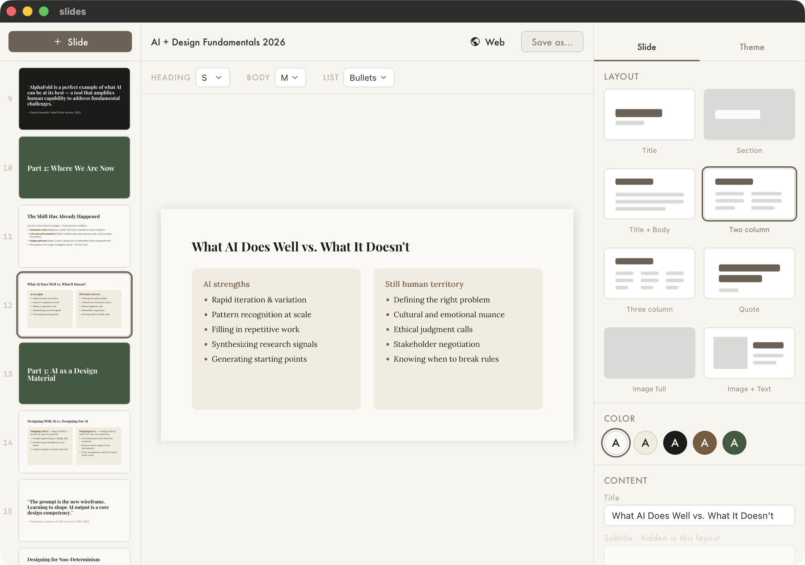

Slides
V.0.2
I noticed people using LLMs to generate slides. Powerpoint is far too heavy for this. People soon figure that out and then start doing Markdown or Html slide decks. There's many advantages for using AI to summarize content and put it into slides.
I feel this needs its own editor. Mine is built on a simple json schema. The LLM can easily write json and focus on editing content. Then use the editor to apply themes and do edits.
My specific POV here is that I want to change themes after the slides are made, and it applies to the whole deck. Not pick the theme first before I get started. I also believe templates should be simple. I welcomed Figma Slides as a huge improvement over Google Slides, but still have found their themes to be over-complicated. And somehow editing and copy/paste still takes way too long in Figma slides. (Try adding links to pages and editing them, it's infuriating.)
Html is great for slides because it has all the text flow and styling features you can ever want, and publishing slides online is innately useful. But I don't want to be editing html and css to make a presentation, even with the help of an AI agent. Themes and templates serve the purpose of helping to structure the presentation without too much distraction from the content.
This is one of my more ambitious ideas. To make a simple tool that facilitates collaboration with AI yet still has a lot of design controls. So far this has been just over 1 day of work, so I haven't put too much effort into making it nice yet.